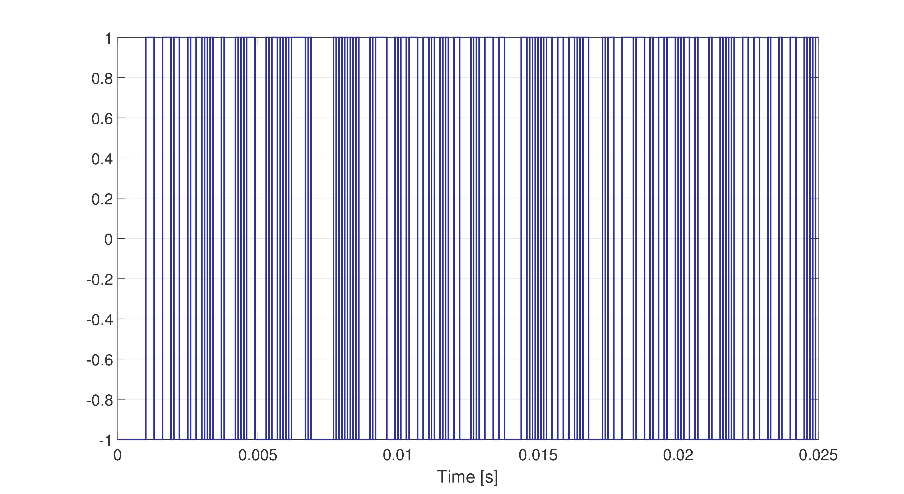
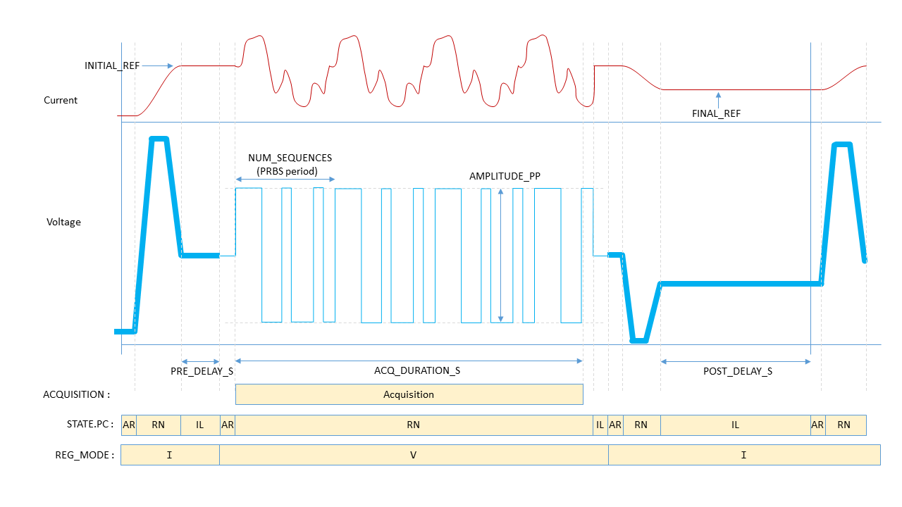

PRBS¶
The PRBS method injects a signal with white noise characteristics; the spectrum of a PRBS signal is flat and excites all frequencies when the signals’ clock period \(T_{ck}\) is equal to the sampling period. However, for a clock period larger than the sampling period, the spectrum has an envelop of the following form:
where \(\text{sinc}(y) = \sin(y)/y\). Note that this spectrum has dips around \(2\pi/T_{ck}, 4\pi/T_{ck},6\pi/T_{ck},\ldots\), which signifies that the frequency response of a system (when excited with a PRBS clock period greater than the sampling period) will be significantly impacted by the signal-to-noise ratio at these frequency points. It is thus recommended that the clock period is always selected to be equal to the sampling period in order to obtain the most accurate response.
The PRBS method is much faster than the sine-fit method since only one experiment needs to be performed (as opposed to performing multiple experiments, where each experiment excites a single frequency). However, there are three main shortcomings in using the PRBS method: (i) the limited frequency response resolution at lower frequencies, and (ii), a distortion in the frequency response caused by noise and (iii) the fact that the PRBS signal has a very large rate of change (which may not be realizable in certain converters). The resolution issue can be resolved by increasing the number of bits (i.e., the data length of a PRBS period); however, this requires more data to be stored, and the FGC is limited in the amount of data that can be saved in a log file before the signal begins to be down-sampled (the data limit for any given signal in a log file is \(2890000/(4N_s)\), where \(N_s\) is the number of signals in a FGC log file).
Fig. 4 shows an example of a PRBS signal with a clock period equal to its sampling period of \(100\: \mu s\). A PRBS signal will over-emphasize the high frequency band at the cost of the low and middle frequency band; as already mentioned above, because of the aggressive nature of this signal, caution must be exercised when selecting the desired amplitude.

Fig. 4 Example of a PRBS excitation signal sampled at 10kHz.¶
The user can consult Fig. 5 for setting the characteristics of the PRBS test signal. With respect to the parameter REF.PRBS.PERIOD_ITERS. The frequency response of a system will be linearly spaced in the interval \([f_{min},f_{max}]\), where \(f_{min} = [T_s(2^{\texttt{K Order}}-1)]^{-1}\) and \(f_{max} = (2 \cdot\) REF.PRBS.PERIOD_ITERS \(\cdot T_s)^{-1}\) (and \(T_s\) [s] is the sampling time).

Fig. 5 Characteristics of the prbs-fit measurement process.¶